Deep Neural Networks
Overview of neural network architectures for RL
1 - Artificial neural networks
Artificial neural networks
- An artificial neural network (ANN) is a cascade of fully-connected (FC) layers of artificial neurons.
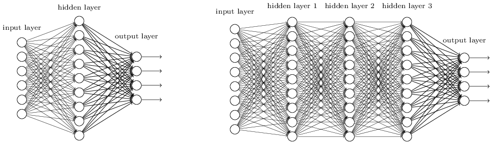
- Each layer \(k\) transforms an input vector \(\mathbf{h}_{k-1}\) into an output vector \(\mathbf{h}_{k}\) using a weight matrix \(W_k\), a bias vector \(\mathbf{b}_k\) and an activation function \(f()\).
\[\mathbf{h}_{k} = f(W_k \times \mathbf{h}_{k-1} + \mathbf{b}_k)\]
- Overall, ANNs are non-linear parameterized function estimators from the inputs \(\mathbf{x}\) to the outputs \(\mathbf{y}\) with parameters \(\theta\) (all weight matrices and biases).
\[\mathbf{y} = F_\theta (\mathbf{x})\]
Loss functions
ANNs can be used for both regression (continuous outputs) and classification (discrete outputs) tasks.
In supervised learning, we have a fixed training set \(\mathcal{D}\) of \(N\) samples \((\mathbf{x}_t, \mathbf{t}_i)\), where \(t_i\) is the desired output or target.
Regression:
The output layer uses a linear activation function: \(f(x) = x\)
The network minimizes the mean square error (mse) of the model on the training set:
\[\mathcal{L}(\theta) = \mathbb{E}_{\mathbf{x}, \mathbf{t} \in \mathcal{D}} [ ||\mathbf{t} - \mathbf{y}||^2 ]\]
Classification:
The output layer uses the softmax operator to produce a probability distribution: \(y_j = \dfrac{e^{z_j}}{\sum_k e^{z_k}}\)
The network minimizes the cross-entropy or negative log-likelihood of the model on the training set:
\[\mathcal{L}(\theta) = \mathbb{E}_{\mathbf{x}, \mathbf{t} \in \mathcal{D}} [ - \mathbf{t} \, \log \mathbf{y} ]\]
Cross-entropy
- The cross-entropy between two probability distributions \(X\) and \(Y\) measures their similarity:
\[ H(X, Y) = \mathbb{E}_{x \sim X}[- \log P(Y=x)] \]
Are samples from \(X\) likely under \(Y\)?
Minimizing the cross-entropy makes the two distributions equal almost anywhere.
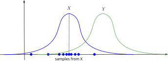
Cross-entropy
- In supervised learning, the targets \(\mathbf{t}\) are fixed one-hot encoded vectors.
\[ \mathcal{L}(\theta) = \mathbb{E}_{\mathbf{x}, \mathbf{t} \in \mathcal{D}} [ - \sum_j t_j \, \log y_{j} ] = \mathbb{E}_{\mathbf{x}, \mathbf{t} \in \mathcal{D}} [ - \sum_j t_j \, \log \dfrac{e^{z_j}}{\sum_k e^{z_k}} ] \]
- But it could be any target distribution.
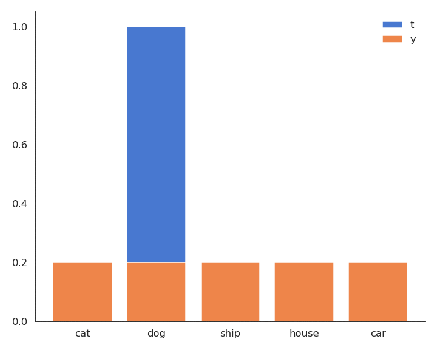
Backpropagation
- In both cases, we want to minimize the loss function by applying Stochastic Gradient Descent (SGD) or a variant (Adam, RMSprop).
\[ \Delta \theta = - \eta \, \nabla_\theta \mathcal{L}(\theta) \]
The question is how to compute the gradient of the loss function w.r.t the parameters \(\theta\).
For both the mse and cross-entropy loss functions, we have:
\[\nabla_\theta \mathcal{L}(\theta) = \mathbb{E}_\mathcal{D} [- (\mathbf{t} - \mathbf{y}) \, \nabla_\theta \, \mathbf{y}]\]
There is an algorithm to compute efficiently the gradient of the output w.r.t the parameters: backpropagation (see Neurocomputing).
In deep RL, we do not care about backprop: tensorflow or pytorch do it for us.
Components of neural networks
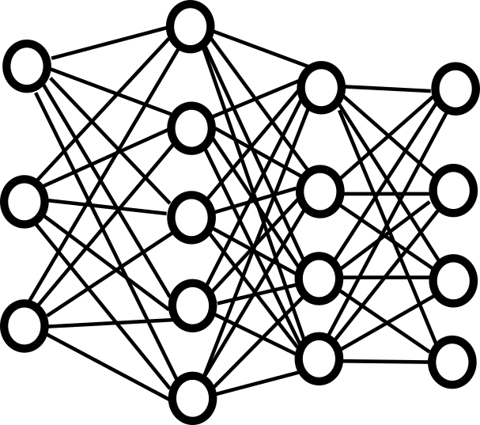
- There are three aspects to consider when building a neural network:
Architecture: how many layers, what type of layers, how many neurons, etc.
- Task-dependent: each RL task will require a different architecture. Not our focus.
Loss function: what should the network do?
- Central to deep RL!
Update rule how should we update the parameters \(\theta\) to minimize the loss function? SGD, backprop.
- Not really our problem, but see natural gradients later.
2 - Convolutional neural networks
Convolutional layers
When using images as inputs, fully-connected networks (FCN) would have too many weights:
Slow.
Overfitting.
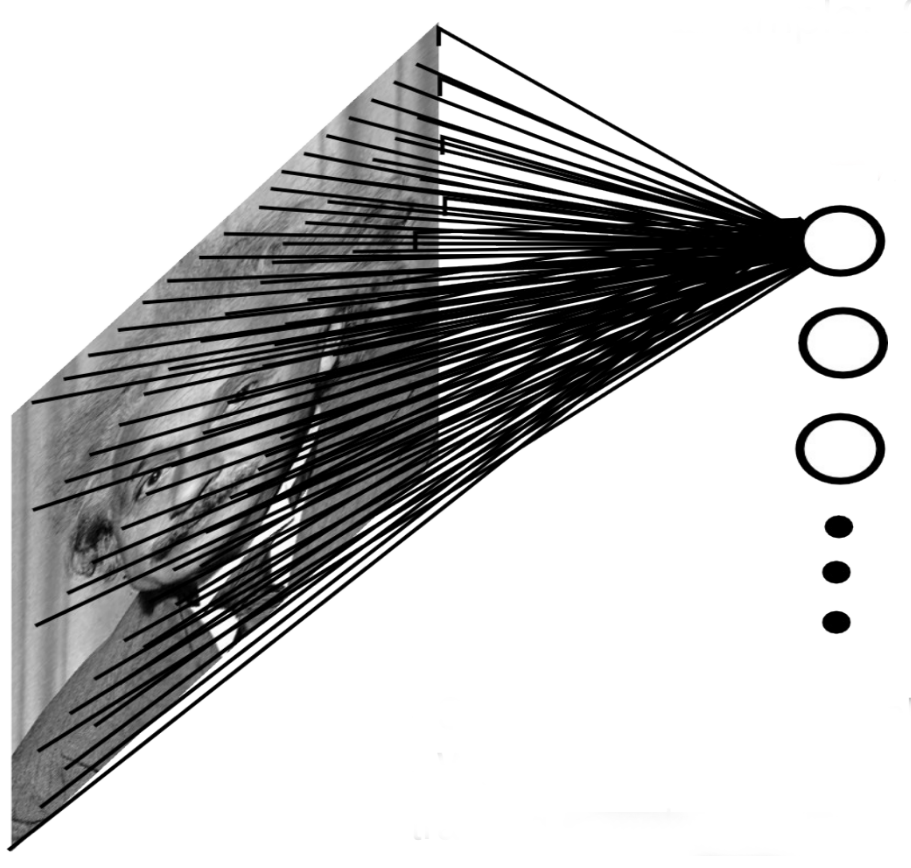
Convolutional layers reduce the number of weights by reusing weights at different locations.
Principle of a convolution.
Fast and efficient.
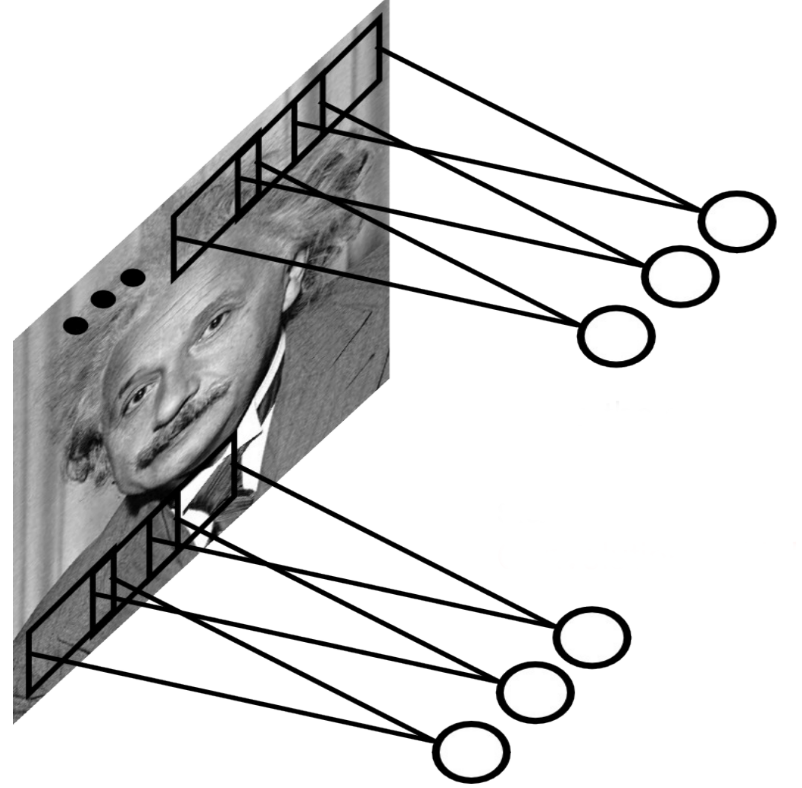
Convolutional layers
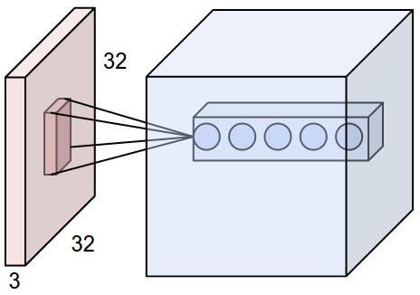

A convolutional layer extracts features of its inputs.
\(d\) filters are defined with very small sizes (3x3, 5x5…).
Each filter is convoluted over the input image (or the previous layer) to create a feature map.
The set of \(d\) feature maps becomes a new 3D structure: a tensor.
If the input image is 32x32x3, the resulting tensor will be 32x32xd.
The convolutional layer has only very few parameters: each feature map has 3x3 values in the filter and a bias, i.e. 10 parameters.
The convolution operation is differentiable: backprop will work.
Max-pooling

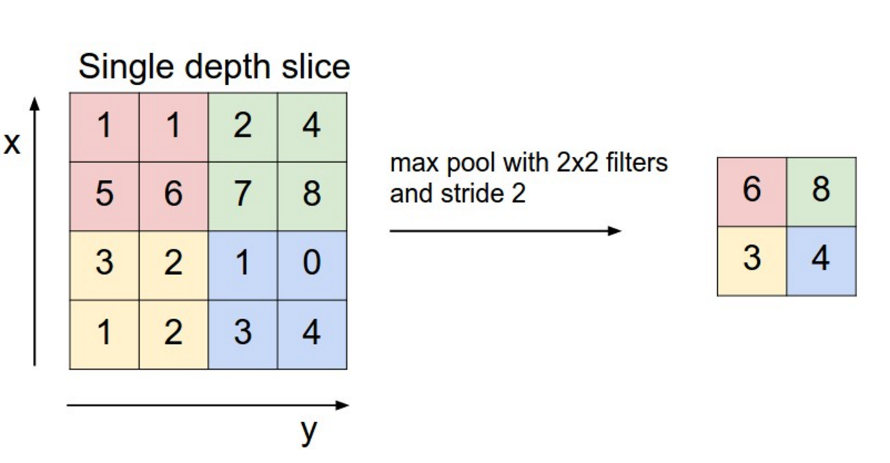
The number of elements in a convolutional layer is still too high. We need to reduce the spatial dimension of a convolutional layer by downsampling it.
For each feature, a max-pooling layer takes the maximum value of a feature for each subregion of the image (mostly 2x2).
Pooling allows translation invariance: the same input pattern will be detected whatever its position in the input image.
Max-pooling is also differentiable.
Convolutional neural networks
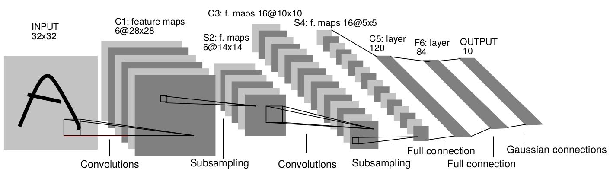
A convolutional neural network (CNN) is a cascade of convolution and pooling operations, extracting layer by layer increasingly complex features.
The spatial dimensions decrease after each pooling operation, but the number of extracted features increases after each convolution.
One usually stops when the spatial dimensions are around 7x7.
The last layers are fully connected. Can be used for regression and classification depending on the output layer and the loss function.
Training a CNN uses backpropagation all along: the convolution and pooling operations are differentiable.
Convolutional neural networks
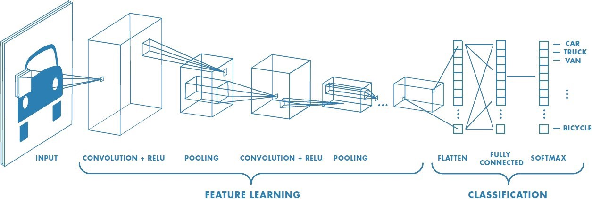
- The only thing we need to know is that CNNs are non-linear function approximators that work well with images.
\[\mathbf{y} = F_\theta (\mathbf{x})\]
The conv layers extract complex features from the images through learning.
The last FC layers allow to approximate values (regression) or probability distributions (classification).
3 - Autoencoders
Autoencoders
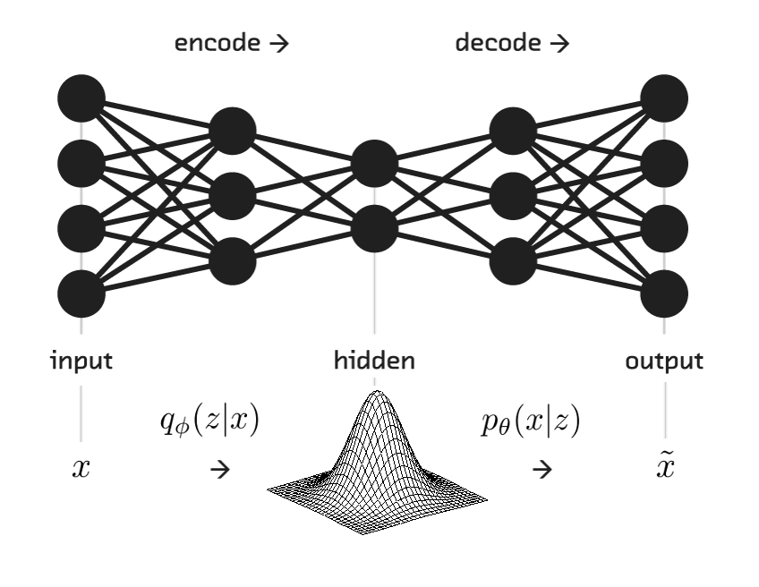
The problem with FCN and CNN is that they extract features in supervised learning tasks.
- Need for a lot of annotated data (image, label).
Autoencoders allows unsupervised learning:
- They only need inputs (images).
Their task is to reconstruct the input:
\[\mathbf{y} = \mathbf{\tilde{x}} \approx \mathbf{x}\]
- The reconstruction loss is simply the mse between the input and its reconstruction.
\[ \mathcal{L}_\text{autoencoder}(\theta) = \mathbb{E}_{\mathbf{x} \in \mathcal{D}} [ ||\mathbf{\tilde{x}} - \mathbf{x}||^2 ] \]
- Apart from the loss function, they are trained as regular NNs.
Autoencoders
Autoencoders consists of:
the encoder: from the input \(\mathbf{x}\) to the latent space \(\mathbf{z}\).
the decoder: from the latent space \(\mathbf{z}\) to the reconstructed input \(\mathbf{\tilde{x}}\).

Autoencoders
The latent space \(\mathbf{z}\) is a compressed representation (bottleneck) of the inputs \(\mathbf{x}\).
It has to learn to compress efficiently the inputs without losing too much information, in order to reconstruct the inputs.
Dimensionality reduction.
Unsupervised feature extraction.
Autoencoders in deep RL
In deep RL, we can construct the feature vector with an autoencoder.
The autoencoder can be trained offline with a random agent or online with the current policy (auxiliary loss).
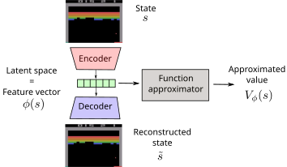
4 - Recurrent neural networks
Recurrent neural networks
- FCN, CNN and AE are feedforward neural networks: they transform an input \(\mathbf{x}\) into an output \(\mathbf{y}\):
\[\mathbf{y} = F_\theta(\mathbf{x})\]
- If you present a sequence of inputs \(\mathbf{x}_0, \mathbf{x}_1, \ldots, \mathbf{x}_t\) to a feedforward network, the outputs will be independent from each other:
\[\mathbf{y}_0 = F_\theta(\mathbf{x}_0)\] \[\mathbf{y}_1 = F_\theta(\mathbf{x}_1)\] \[\dots\] \[\mathbf{y}_t = F_\theta(\mathbf{x}_t)\]
- The output \(\mathbf{y}_t\) does not depend on the history of inputs \(\mathbf{x}_0, \mathbf{x}_1, \ldots, \mathbf{x}_{t-1}\).
Recurrent neural networks
This not always what you want.
If your inputs are frames of a video, the correct response at time \(t\) might also depend on previous frames.
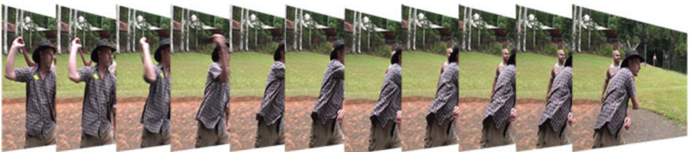
The task of the NN could be to explain what happens at each frame.
As we saw, a single frame is often not enough to predict the future (Markov property).
Recurrent neural networks
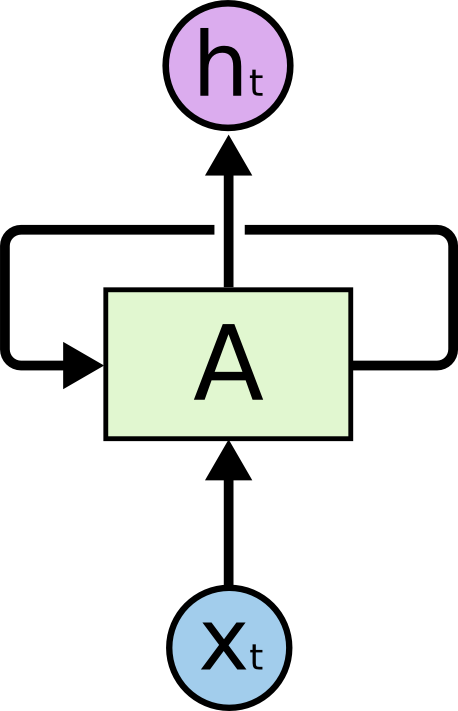
A recurrent neural network (RNN) uses it previous output as an additional input (context).
All vectors have a time index \(t\) denoting the time at which this vector was computed.
The input vector at time \(t\) is \(\mathbf{x}_t\), the output vector is \(\mathbf{h}_t\):
\[ \mathbf{h}_t = f(W_x \times \mathbf{x}_t + W_h \times \mathbf{h}_{t-1} + \mathbf{b}) \]
The input \(\mathbf{x}_t\) and previous output \(\mathbf{h}_{t-1}\) are multiplied by learnable weights:
\(W_x\) is the input weight matrix.
\(W_h\) is the recurrent weight matrix.
Recurrent neural networks
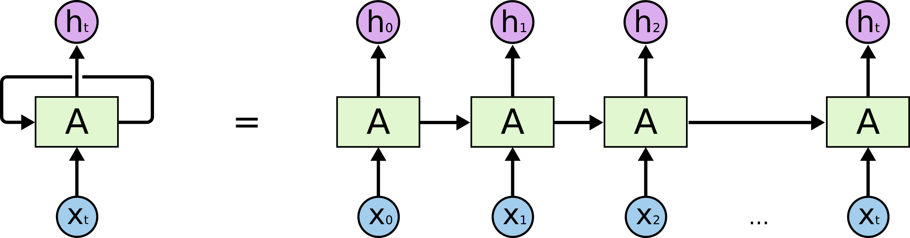
This is equivalent to a deep neural network taking the whole history \(\mathbf{x}_0, \mathbf{x}_1, \ldots, \mathbf{x}_t\) as inputs, but reusing weights between two time steps.
The weights are trainable using backpropagation through time (BPTT).
A RNN can learn the temporal dependencies between inputs.
LSTM cell
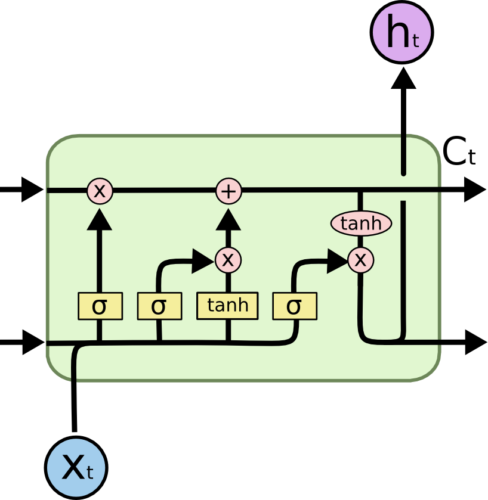
A popular variant of RNN is LSTM (long short-term memory).
In addition to the input \(\mathbf{x}_t\) and output \(\mathbf{h}_t\), it also has a state (or memory or context) \(\mathbf{C}_t\) which is maintained over time.
It also contains three multiplicative gates:
The input gate controls which inputs should enter the memory.
The forget gate controls which memory should be forgotten.
The output gate controls which part of the memory should be used to produce the output.
RNN in RL
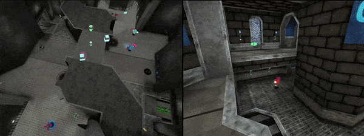
An obvious use case of RNNs in deep RL is for POMDP (partially observable MDP).
If the individual states \(s_t\) do not have the Markov property, the output of a LSTM does:
- The output of the RNN is a representation of the complete history \(s_0, s_1, \ldots, s_t\).
We can apply RL on the output of a RNN and solve POMDPs for free!